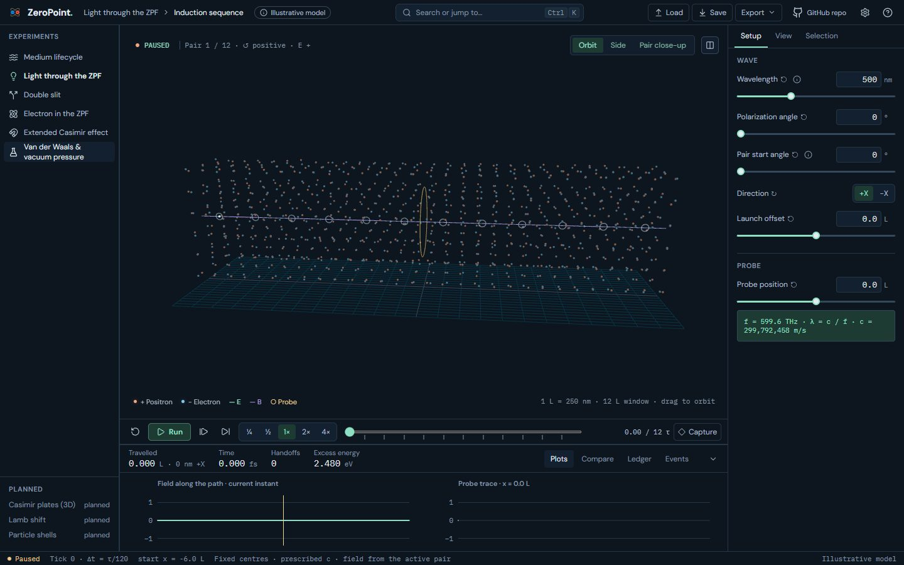
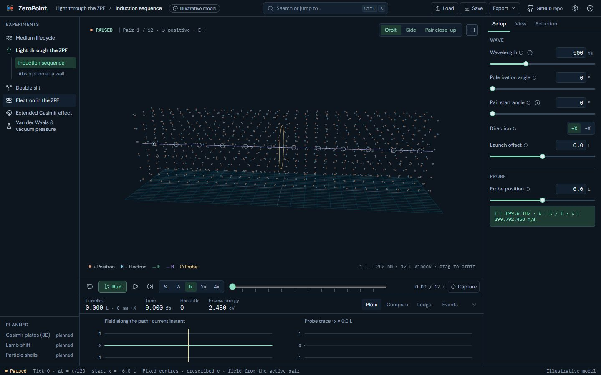
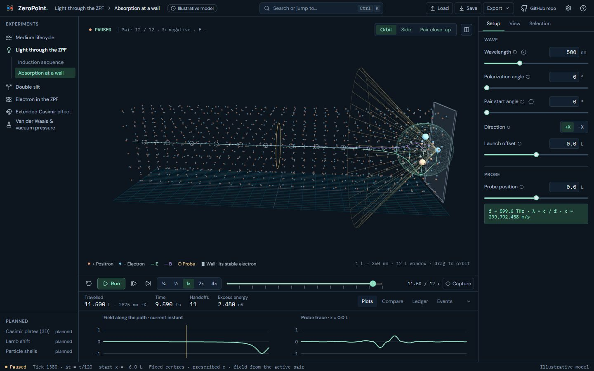
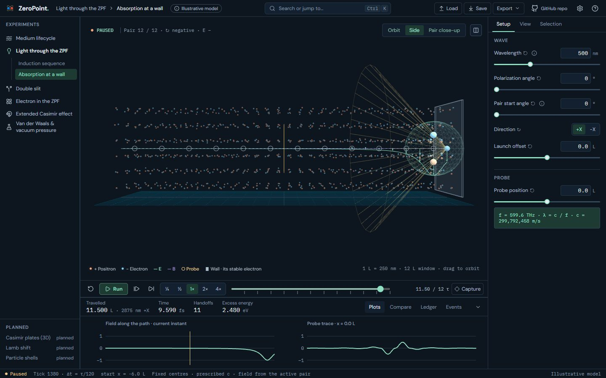
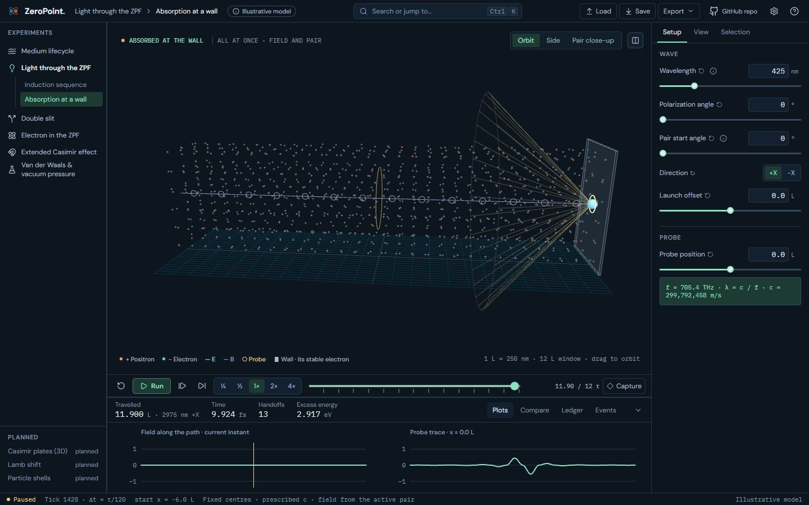
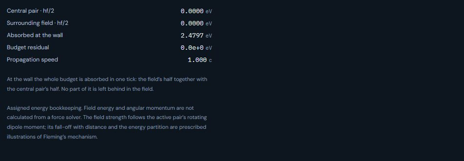
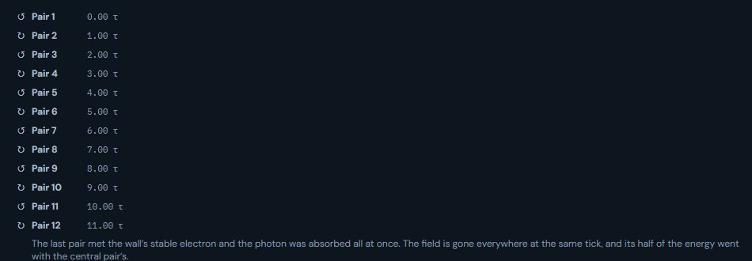
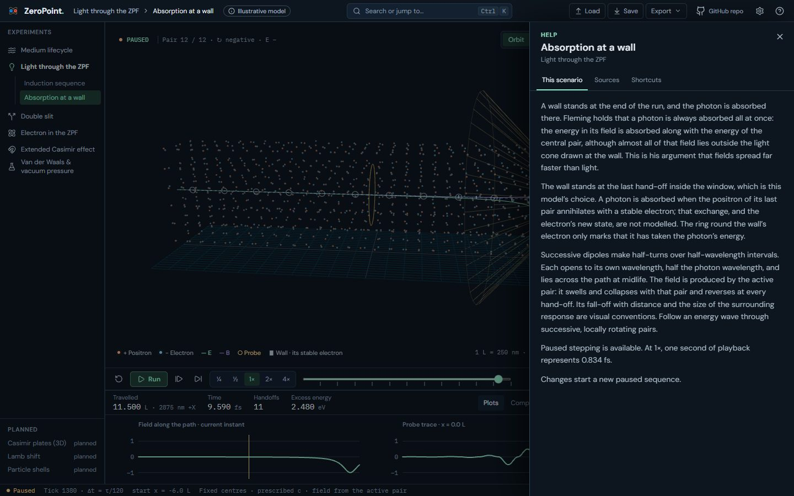
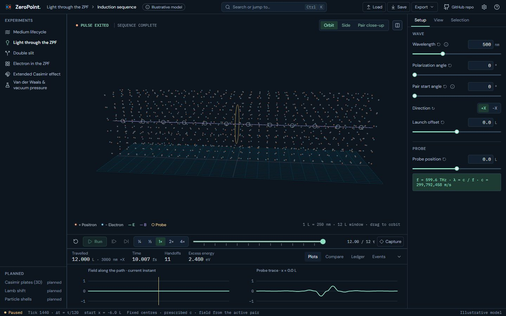
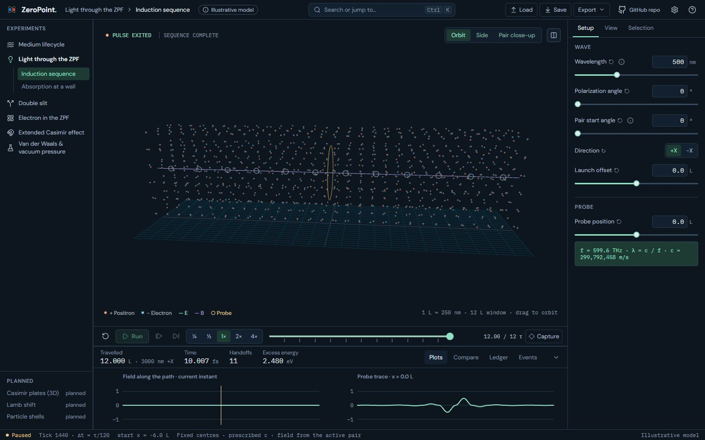

Absorption in the Light lab: before and after
A second Light scenario after Fleming's Photons paper (§1, §6, §7, Fig. 1) and book ch. 19: the photon is absorbed all at once at a wall, the field's half of the energy with the central pair's.
Real screens: "before" runs the worktree given as --before (usually the layer below), and "after" runs this one. Click an image to open it at full size. Regenerate with node scripts/compare-screens.mjs --before ../22a-light-absorption --out docs/ui-previews/22b-light-absorption --set absorption --title 'Absorption in the Light lab' --description 'A second Light scenario after Fleming'\''s Photons paper (§1, §6, §7, Fig. 1) and book ch. 19: the photon is absorbed all at once at a wall, the field'\''s half of the energy with the central pair'\''s.'.
The rail: Light gains a second scenario, Absorption at a wall




Absorption · tick 1380, the last pair at midlife: the wall, its electron and Fleming’s light cone


Absorption · tick 1380, side view: almost all of the field lies outside the cone


Absorption · tick 1440: absorbed all at once, field and pair; the electron ringed

Absorption · 425 nm, tick 1428: the pairs do not divide the window, so the wall stands short of its edge


Dock › Ledger after the absorption: the whole budget absorbed, residual zero


Dock › Events after the absorption


Help › This scenario: the absorption and what is not modelled


Induction sequence · tick 1440: unchanged, the pulse leaves the window



